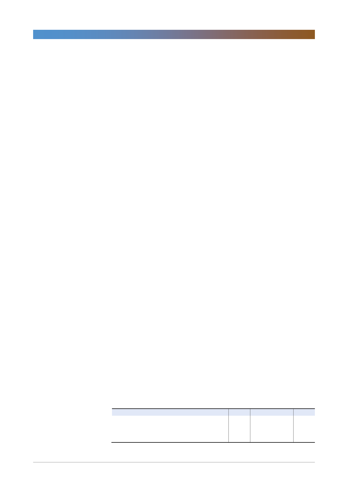

삼성생명(032830)
+) 요구자본도 보험회사로서 고민해야 하는 부분이라고 생각되는데, 현재 신규
투자이원이 3.5%인 점도 고려해야 한다고 생각됨(지분 매각 후 재 투자 등).
- 참고로 작년 매각한 전자 지분은 초장기채 매입에 사용. 추가 매입한 채권의
평균 이원이 2.4% 수준. 전자 지분 매각은 신규이원의 3bp 하락 영향이 있었
고, 필요이자 증가로 부담이율도 3bp 상승. 삼성생명의 이원차마진 역시 3bp
하락.
6. GA 채널 상품 전략
- 2018년 지배력강화는 1) 인력 충당, 2) 주요종신 중 유병자 상품 등 경쟁력
있는 상품 중심으로 공략했음
- 건강상해 시장의 성장이 예상되어 건강상해 상품 출시 계획
- 우선은 시장 내 presence 강화 후 상품전략에 대한 고민을 할 것
7. EV 발표 중단한 계열사가 있는데, 정보 혼돈 방지가 이유였음. MCEV(시장부
합 내재가치)화 되지 않은 경우 IFRS17, K-ICS 도입시 수치 차이가 클 텐
데 당사도 EV의 MCEV화 혹은 추가 옵션 반영 계획이 있는지, 혹은 중기적
으로는 지금 공시 기준을 유지할 계획인지
- 손보사와 달리 생보사는 변액보험 등 복잡한 상품이 더 많아 CSM 산출 등이
어려워 아직 작업 진행 중. 금년부터 가시화되지 않을까 생각되는데, 아직
CSM이 EV를 대체할 수 있는지, 정확한 차이점이 뭔지 고민 중이기에 중기적
으로는 현재 공시 기준 유지 예정.
8. 보험이익. 2019년 타겟(1.5조)은 2018년 대비 약 1,000억원 증가를 의미하
는데, 760억 신계약 초가상각 및 유암종 지급 등 2018년도 일회성 요인 감안
시 비슷한 수준인 듯. 이러한 사항 등이 반영된 가이던스인지.
- 비차익: 고강도 원가혁신 작년부터 추진 중이기에 1,000억원 saving 효과로
비차익 700억원 증가 효과 예상
- 사차익: 2016년 전에는 7~8년 동안 연간 4,000억~5,000억원 유지. 2016년
부터 사차혁신으로 2017년 8,400억원 달성했음. 2018년은 금융당금의 소비
자 위주 지급보험금 정책으로 암보험 관련 지급에 따른 1,200억원 감소 효과
있었음. 2019년에는 2018년 사차익(7,230억원) 대비 500억원 신장 목표.
사차대책TF 개설을 통해 목표 달성 노력할 것.
- 이차익은 금리/주가 등 대외 여건에 따른 손익 변동이 크기에 보험 손익 우상
향 정책 수립을 통해 회사 성장 이어갈 계획이고 이러한 부분은 앞서 말한 회
사평가기준에도 반영되어 있음
<표 1> 4분기 실적 및 컨센서스
보험영업수익
보험손익
투자손익
당기순이익
4Q17
4,080
(181)
1,564
(72)
1Q18
4,103
(384)
1,981
390
주: 당기순이익은 지배주주순이익 기준
자료: 삼성생명, 한국투자증권
2Q18
4,094
(61)
3,027
1,056
3Q18
4,110
(301)
1,837
280
4Q18P
4,169
(469)
1,749
(61)
QoQ(%)
1.4
NM
(4.8)
NM
(단위: 십억원)
YoY(%)
2.2
NM
11.8
NM
컨센서스
4,419
(230)
1,989
251
3